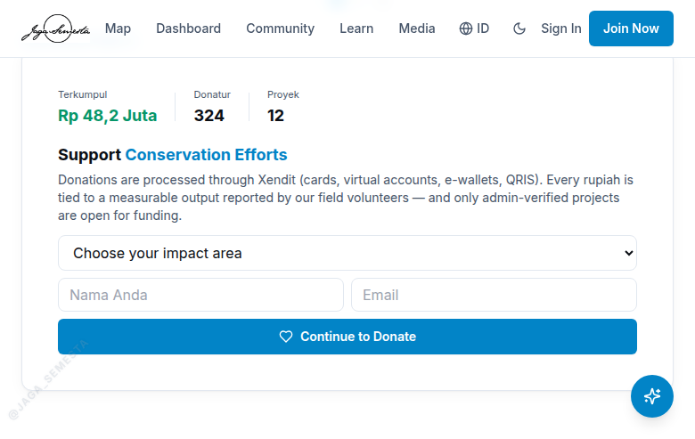
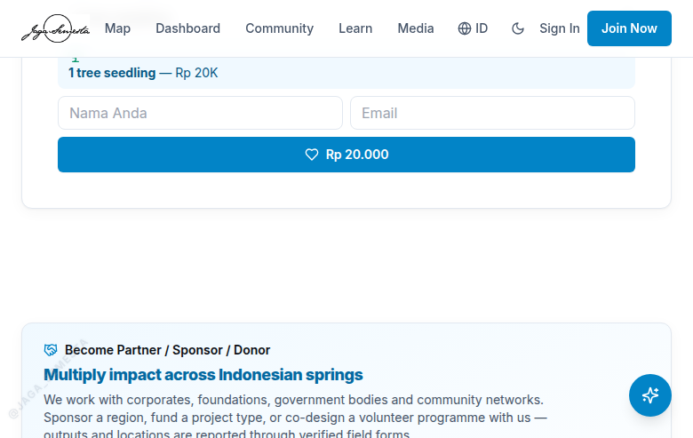
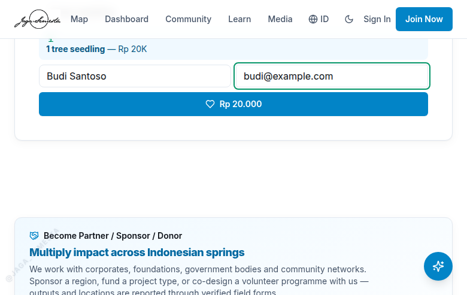
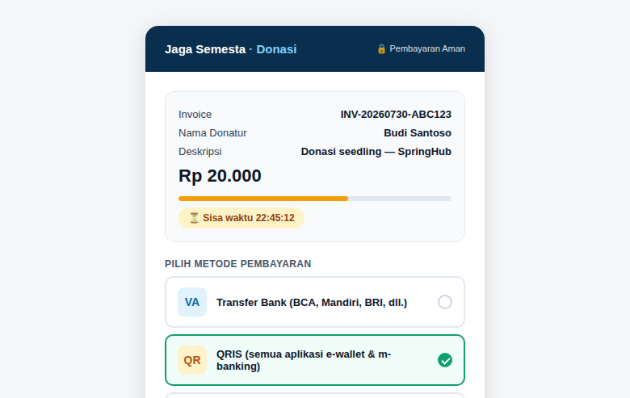
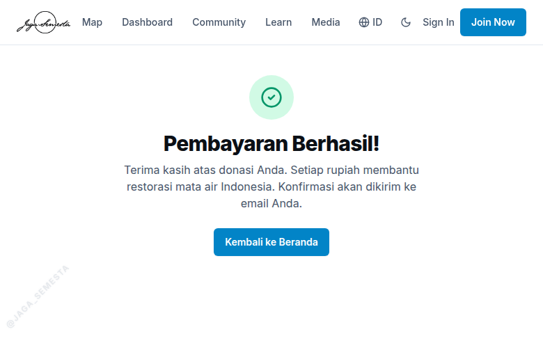
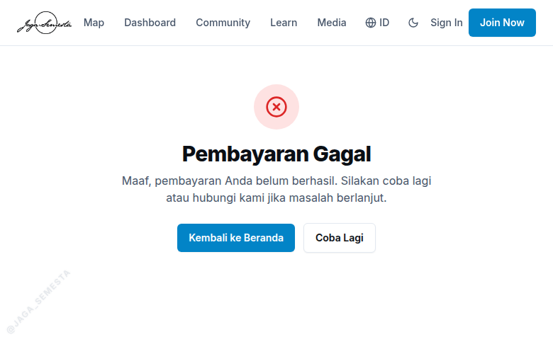

Panduan langkah demi langkah tentang cara pengunjung menyumbang untuk pemulihan mata air Indonesia — disusun dengan bahasa sederhana agar mudah dipahami oleh semua kalangan.
4 Metode Bayar Transfer Bank (Virtual Account), QRIS, e-wallet (OVO, GoPay, DANA, ShopeePay), dan kartu debit/kredit. |
Rp 1.000 Donasi Minimal Mulai dari Rp 1.000 — bisa memilih paket dampak siap pakai atau jumlah bebas. |
24 jam Masa Berlaku Invoice Setiap tagihan berlaku 24 jam dan hanya bisa dipakai satu kali pembayaran. |
7 Lapisan Keamanan Validasi nominal di server, token rahasia webhook, pencocokan data, cegah duplikat, batas frekuensi, dan anti-CSRF. |
100% Kode Siap Produksi Seluruh sistem invoice, webhook, dan halaman konfirmasi telah terpasang di website produksi. |
5 menit Menuju Aktivasi Fitur donasi aktif segera setelah API key Xendit dimasukkan ke server — hanya perlu 5 menit. |
SpringHub adalah platform komunitas untuk memantau dan memulihkan mata air di Indonesia. Fitur donasi memungkinkan pengunjung website untuk mendanai proyek restorasi — menanam bibit, membuat parit resapan, membersihkan sedimentasi, dan memantau mata air. Uang dikelola melalui Xendit, payment gateway lokal yang menjadi "kasir" digital: menerima pembayaran dari donatur dan menyampaikan konfirmasinya ke website secara otomatis dan aman. Laporan ini menjelaskan keseluruhan alur dalam bahasa yang mudah dipahami.
Donasi di SpringHub adalah cara bagi siapa pun untuk turut serta memulihkan mata air Indonesia. Pengunjung dapat memilih dampak yang ingin didanai — misalnya menanam satu bibit pohon atau membuat satu parit resapan — lalu membayar melalui berbagai metode yang umum digunakan sehari-hari.
Xendit adalah perusahaan penyedia layanan pembayaran (payment gateway) yang sudah dipercaya banyak lembaga di Indonesia. Dalam alur donasi ini, Xendit bertindak sebagai kasir:
Website SpringHub tidak pernah memproses uang secara langsung, sehingga data pembayaran donatur — seperti nomor kartu — tidak pernah tersimpan di website.
| Hal | Penjelasan |
|---|---|
| Siapa yang bisa donasi? | Semua orang, tanpa perlu membuat akun terlebih dahulu. |
| Nominal donasi | Mulai dari Rp 1.000 hingga Rp 100.000.000. |
| Metode pembayaran | Transfer bank (Virtual Account), QRIS, OVO, GoPay, DANA, ShopeePay, dan kartu debit/kredit. |
| Bukti pembayaran | Setiap donasi memiliki nomor invoice unik; donatur mendapat konfirmasi saat pembayaran berhasil. |
Berikut gambaran utuh alur donasi dalam 6 langkah besar:
🌍 Buka Website Pengunjung membuka springhub.id |
→ | 💝 Pilih Nominal Isi form donasi: paket, nama, email |
→ | 🧾 Invoice Terbit Sistem membuat tagihan via Xendit |
→ | 💰 Bayar Donatur membayar di halaman Xendit |
→ | ✅ Konfirmasi Xendit memberi tahu sistem otomatis |
→ | 🌱 Dana Tersalur Donasi tercatat & mendanai proyek |
Setiap langkah di atas dijelaskan secara rinci pada bagian berikutnya, lengkap dengan tampilan halaman yang dilihat donatur.
| 1 |
Membuka Website dan Menemukan Bagian DonasiPengunjung membuka halaman utama www.springhub.id lalu menggulir halaman hingga menemukan bagian Donasi. Bagian ini menampilkan jumlah dana yang terkumpul, jumlah donatur, dan jumlah proyek yang telah didanai. |

| 2 |
Memilih Paket Donasi Sesuai DampakPengunjung memilih paket donasi dari daftar pilihan. Setiap paket berhubungan dengan dampak nyata di lapangan: |
| Paket | Nominal | Dampak di Lapangan |
|---|---|---|
| 🌱 Seedling | Rp 20.000 | 1 bibit pohon ditanam |
| 🪨 Trench | Rp 50.000 | 1 parit resapan (rorak) dibuat |
| 💧 Sediment | Rp 100.000 | 1 m³ sedimentasi dikeruk dari mata air |
| 🔭 Monitoring | Rp 1.000.000 | 50 mata air dipantau |
| ✏️ Jumlah bebas | Mulai Rp 1.000 | Bebas menentukan nominal sendiri |

| 3 |
Mengisi Nama dan EmailPengunjung mengisi nama (wajib) dan email (opsional, untuk menerima konfirmasi pembayaran). Setelah itu, tombol hijau menampilkan nominal donasi dan siap diklik untuk melanjutkan. |

| 4 |
Sistem Menerbitkan Invoice (Tagihan)Website mengirim permintaan ke Xendit, lalu Xendit membuat invoice — tagihan digital dengan nomor unik, nominal, dan masa berlaku 24 jam. Invoice bersifat sekali pakai dan nominalnya tidak dapat diubah dari luar. |
| 5 |
Pindah ke Halaman Pembayaran XenditTab baru terbuka menuju halaman pembayaran yang dikelola Xendit. Halaman ini menampilkan ringkasan invoice (nomor tagihan, nominal, nama donatur) beserta pilihan metode pembayaran. |

| 6 |
Memilih Metode PembayaranDonatur membayar menggunakan metode pilihannya. Berikut contoh cara kerja setiap metode: |
| Metode | Cara Kerja |
|---|---|
| 🏦 Transfer Bank (VA) | Sistem membuat nomor Virtual Account khusus (misalnya 8–9 digit). Donatur mentransfer lewat m-banking atau ATM — contoh: 8801234567890 a.n. SpringHub. |
| 📱 QRIS | Memindai kode QR dengan aplikasi e-wallet atau m-banking mana pun, lalu menyetujui pembayaran. |
| 💚 OVO / GoPay / DANA / ShopeePay | Donatur diarahkan ke aplikasi untuk menyetujui pembayaran. |
| 💳 Kartu debit/kredit | Mengisi nomor kartu. Data kartu hanya diproses oleh Xendit dan tidak tersimpan di website. |
| 7 |
Xendit Mengirim Konfirmasi OtomatisBegitu pembayaran berhasil, Xendit langsung mengirim konfirmasi otomatis (webhook) ke server SpringHub. Sistem memverifikasi keaslian pesan — melalui token rahasia dan pencocokan jumlah — lalu mencatat donasi sebagai Lunas di database. |
| 8 |
Melihat Halaman Pembayaran BerhasilSetelah membayar, donatur diarahkan kembali ke website pada halaman Pembayaran Berhasil. |

| 9 |
Jika Pembayaran Gagal atau KadaluarsaDonatur diarahkan ke halaman Pembayaran Gagal dengan tombol untuk mencoba kembali. Invoice yang tidak dibayar akan kadaluarsa otomatis setelah 24 jam. |

| 10 |
Donasi Tercatat dan BerdampakDonasi yang lunas tercatat dalam laporan admin, menambah dana proyek yang didukung, dan bila donatur memiliki akun, ia memperoleh poin komunitas (1 poin per Rp 1.000). Admin memantau seluruh transaksi dari panel Donasi. |
Sistem donasi dilindungi beberapa lapisan pengaman yang bekerja bersamaan:
| Lapisan Pengaman | Fungsi |
|---|---|
| Validasi jumlah di server | Nominal dicek ulang di server — paket Rp 20.000 tidak dapat dibayar dengan nominal lain. |
| Token rahasia webhook | Konfirmasi dari Xendit ditandatangani token rahasia; pesan tanpa token yang benar ditolak. |
| Pencocokan data transaksi | Nomor invoice dan jumlah pembayaran dicocokkan dengan catatan sebelum ditandai lunas. |
| Pencegahan pembayaran ganda | Satu invoice hanya dapat lunas satu kali; konfirmasi duplikat diabaikan. |
| Pembatasan frekuensi | Jumlah permintaan per orang dibatasi untuk mencegah penyalahgunaan. |
| Anti-CSRF | Form donasi dilindungi token anti pemalsuan permintaan lintas situs. |
Seluruh kode untuk alur di atas telah selesai dan terpasang di website produksi www.springhub.id. Fitur donasi akan aktif segera setelah dua kunci dari dashboard akun Xendit dimasukkan ke server.
| Komponen | Status | Keterangan |
|---|---|---|
| Form donasi (tampilan) | Selesai | Sudah terpasang di website |
| Pembuatan invoice Xendit | Selesai | Kode siap, menunggu API key |
| Penerimaan konfirmasi (webhook) | Selesai | Dengan verifikasi token keamanan |
| Halaman berhasil / gagal | Selesai | Sudah terpasang di website |
| Laporan donasi admin | Selesai | Panel admin siap |
| API key Xendit | Menunggu | Kunci dari dashboard Xendit client — 5 menit untuk dipasang |